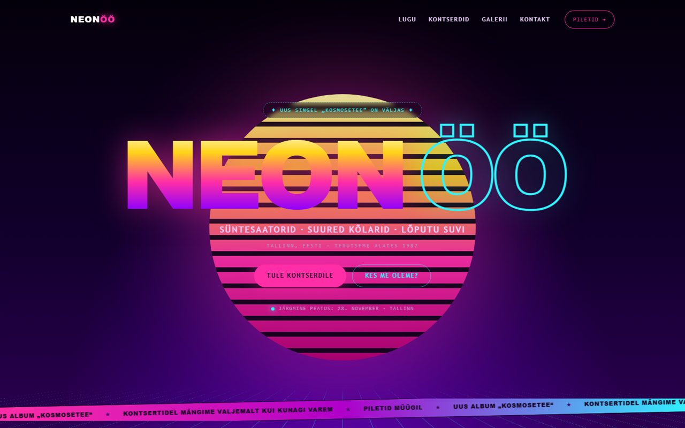
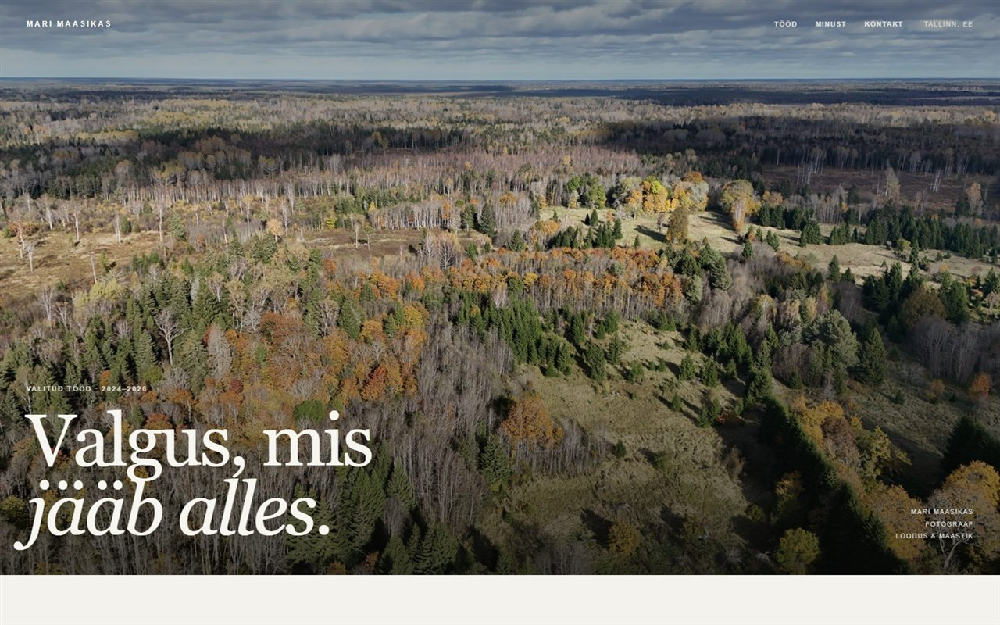
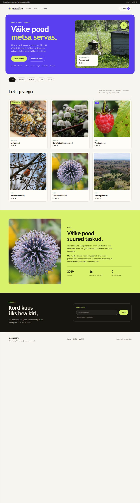

Pastelne päevik
Pink, sõbralik ja veidi kleepsuline isiklik päevik. Kõige kergem alustada.
ZIP ↓
0,9 MB
Kümme malli · INSA insapäevad
Iga mall on tavaline index.html + stiil.css + piltide kaust.
Laadi üks korraga või kõik koos, ava tekstiredaktoris ja otsi sõna „MUUDA“.
10 malli · ZIP 9,6 MB · töötab ka ilma internetita
Pink, sõbralik ja veidi kleepsuline isiklik päevik. Kõige kergem alustada.







index.html, stiil.css ja pildid/.index.html tekstiredaktoris ja otsi sõna MUUDA — need kommentaarid näitavad täpselt, mida muuta./var/www/html) ja ava leht võrgus.Kogu töötoa pildivalik — 85 fotot kategooriate kaupa, iga pilt eraldi vaatamiseks ja valmis failiteega.